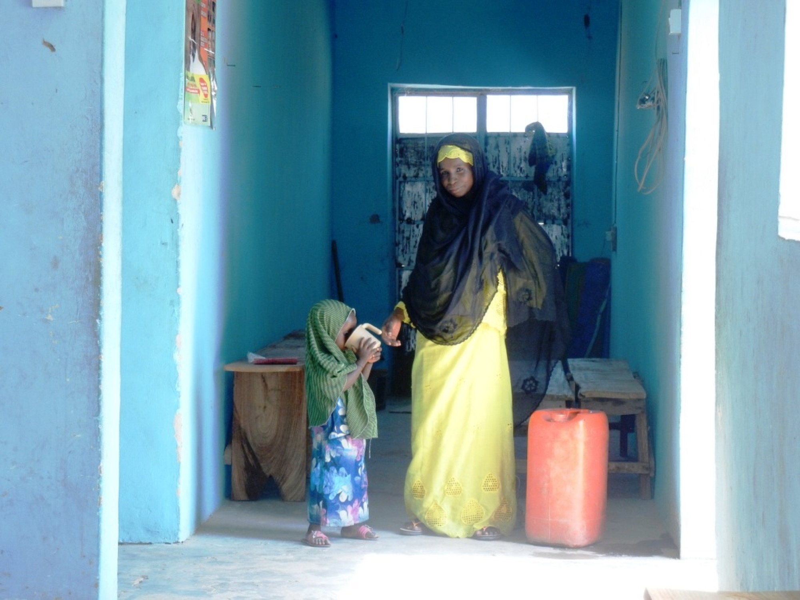
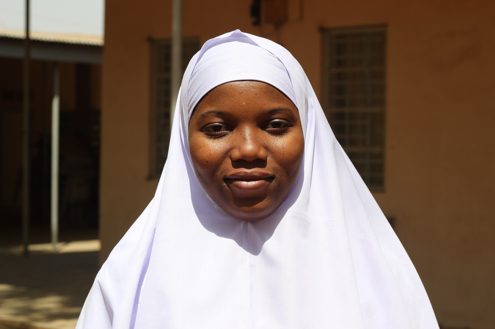

The maternal safety layer for the mothers the health system reaches too late.
Live on WhatsAppapp.bumply.momLagos, Nigeria
Photograph: DFID / UK Aid, northern Nigeria. CC BY-SA 2.0.

BumplyThe problem
The problem
In Nigeria, pregnancy kills a woman every seven minutes.
Bleeding. High blood pressure. Infection. All survivable if someone notices in time.
75,000 deaths a yearHighest toll on earth
WHO, UNICEF, UNFPA, World Bank & UNDESA. Trends in maternal mortality 2000–2023. Geneva: WHO; 2025, Annex 4. Interval derived from the 75,000 annual estimate. Photograph: DFID / UK Aid, CC BY-SA 2.0.
BumplyThe data
The data
One country. A fifth of the world's loss.
75,000
mothers died in 2023
a WHO estimate, not a register count
993
deaths per 100,000 births
the world's highest ratio
28.7%
of all maternal deaths, globally
from 2.6% of world population
1 in 25
lifetime risk, a 15-year-old girl
in Norway, 1 in 60,475
One in five deaths of a Nigerian woman of reproductive age is a maternal death.
WHO/UNICEF/UNFPA/World Bank/UNDESA, Trends in maternal mortality 2000–2023 (2025), §4.1.1 and Annex 4. Globally 712 mothers die every day, one every two minutes.
BumplyWhy she is unreached
Why the system misses her
She is not refusing care.
1
Deciding. Fewer than a third can name three danger signs.
2
Reaching. 47% cannot find the money.
3
Receiving. Most bleeding deaths happen after delivery.
3M+
births a year to Nigerian women who cannot reliably read a text message
Only 30% own a smartphone. An English, text-only app is built for a woman who is
not the one dying.
Nigeria Demographic and Health Survey 2023-24 (NPC & ICF, 2024), Tables 9.27, 15.7.1, 3.3.1 · Doctor HV et al., J Health Care Poor Underserved 2013 · Cresswell JA et al., Lancet Glob Health 2025. Births-affected figure derived from 7.55M live births × 43% illiteracy.
BumplyThe solution
The solution
She already has WhatsApp.
Bumply reads every message for danger, then pulls in a human.
No download, no formShe texts a number and she is enrolled.
Five languages, by voiceEnglish, Pidgin, Yorùbá, Hausa, Igbo.
Works with no networkTriage runs inside her phone.
Bumply · online
i dey see plenty blood
🚨 Blessing, this can be very serious. Abeg, GO to the nearest hospital NOW.
🚗 Alerting Musa (0803…) to carry you now.
📋 Show this code at the clinic: BMP-4KX9
BumplyInside the product
Inside the product
Her anatomy, her baby, her week.
What is happening inside her
Clinical illustration, drawn for Nigerian mothers
Her baby, this week
Rendered week by week to 40
Bumply · online
Wetin dey happen for week 26?
Your pikin don reach about 35cm now. E fit hear your voice.
Voice note · 0:12
🎤 Voice note · 0:06
In her own words
Typed or spoken, any of five languages
LIVE PRODUCT · 29 SECONDS
BumplyInfrastructure
Infrastructure
Four layers. The safety one needs no AI.
Layer 1 · no model
Danger detection
Deterministic code. Five languages. Runs on her phone.
Layer 2 · model
Grounded chat
Answers bounded by vetted WHO and Nigerian guidance.
Layer 3 · speech
Nigerian voice
Our own Whisper and SoroTTS. Yorùbá, Hausa, Igbo.
Layer 4 · edge
On-device fallback
Small models inside a ₦45,000 Android. Zero network.
Human in the loop.
Every red flag alerts a health worker, issues a referral code, and pings whoever drives her.
BumplyAI native
AI native
AI in five places at once.
Not a chatbot bolted onto a clinic app. Every one of them degrades to code, never to nothing.
Speech models get African accents wrong
a third of the time. That is why safety never depends on the transcript.
Language ID per messageShe switches mid-conversation. No settings menu.
Voice in, voice outIn a Nigerian voice. Literacy stops being a barrier.
Photo triageANC cards, drugs and lab results, abnormals flagged.
Grounded answersPlus a 48-myth misinformation checker.
Explainable triageThe worklist says why each mother is on it.
Word-error-rate comparison: Olatunji T, et al. AfriSpeech-200: Pan-African Accented Speech Dataset for Clinical and General Domain ASR, arXiv:2310.00274 (2023). 200 hours, 120 African accents, 13 countries; off-the-shelf Whisper-medium 0.332 WER against 0.167 on LibriSpeech.
BumplyWhat's special
What's special about Bumply
Four things nobody else here has shipped.
01
A model can never suppress an escalation
02
A 258-message multilingual safety benchmark
03
Hours from danger sign to facility arrival
04
Full triage with no network at all
We are open-sourcing the benchmark, the knowledge pack and the on-device stack.
BumplyEvidence · ours
Measured, not claimed
We benchmarked ourselves, and failed.
The first run caught 71% of dangerous messages. Just 33% in Yorùbá.
Then we rebuilt the detector.
100%
sensitivity, all five languages
95.1%
specificity · F1 97.0
Danger-sign sensitivity by language
Share of genuinely dangerous messages correctly escalated. Higher is safer.
Bumply evaluation harness (npm run eval:danger), 258 labelled messages, 115 danger / 143 safe, reproducible and open-sourced. Stated limitation: the set is curated rather than sampled from live traffic, and awaits review by a practising Nigerian midwife.
BumplyEvidence · the literature
Why this design, not another
The literature already told us what works.
Nine randomised trials. 10,348 women. Two-way conversation raises skilled birth attendance.
Broadcast messaging does not.
Two-way messaging → skilled birth attendance
1.23×
95% CI 1.14–1.33 moderate certainty
One-way broadcast → skilled birth attendance
1.04×
95% CI 0.97–1.10 no significant effect
Facility delivery where baseline is low, like Nigeria
1.68×
95% CI 1.30–2.19 Nigeria's is 43%
Rahman MO, Yamaji N, Nagamatsu Y, Ota E. Effects of mHealth Interventions on Improving Antenatal Care Visits and Skilled Delivery Care in LMICs: Systematic Review and Meta-analysis. J Med Internet Res 2022;24(4):e34061 · WHO, Recommendations on digital interventions for health system strengthening (2019), Recommendation 6.
BumplyImpact data
Closing the loop
Others report messages sent. We report arrivals.
Step 1
She writes
→
Step 2 · instant
Escalation
→
Step 3
Referral code
→
Step 4
Arrival confirmed
4
M&E indicators, automatic
Danger signs detected. Referrals issued. Arrivals confirmed. Median time to care.
Exportable to DHIS2, where the government already looks.
BumplyTraction
Not a prototype
Everything you just saw is live.
2
live channels
WhatsApp and Telegram
5
languages shipped
detected per message
196
automated tests green
unit, integration, browser
258
benchmark messages
the safety evaluation set
Built for the regulator
Consent in her language. Right to erasure. A full audit trail of every AI message.
Aligned to Nigeria's Data Protection Act 2023.
Honest status
Pre-pilot. The product is finished. The cohort is not.
That is what we are raising for.
BumplyMarket · why now
Market & why now
7.5 million births a year. Someone is accountable for each one.
We never monetise the mother. She is the reach.
Why now
Nigeria is heading for sub-Saharan Africa's largest smartphone market while a third
of connections are still 2G. We work at both ends of that curve.
Reachable mothers per year
Log scale. The gap between TAM and SOM is the honest part.
Live births derived from WHO MMEIG 2023 (75,000 deaths ÷ MMR 993 × 100,000) · GSMA, The Mobile Economy Sub-Saharan Africa · Nigerian Communications Commission industry statistics. SAM and SOM are Bumply estimates, not third-party figures.
BumplyUnit economics
The money
₦240 a month. Falling to ₦80.
Free-tier inference, GPUs that scale to zero, an offline tier that costs nothing to run.
Free forever
The mother.
Per facility
Clinics. Worklist, referrals, DHIS2.
Per programme
States, HMOs, donors.
Technology only. Kenya's Jacaranda PROMPTS, the closest analogue at 3M mothers,
runs US$2.50 fully loaded.
Cost per mother per month, by scale
Fixed infrastructure amortises; GPU idle time is shared.
One facility subscription covering a few hundred mothers is
gross-margin positive from day one.
Bumply cost model (lib/costs.ts) from published NVIDIA, Modal, Railway and Evolution pricing at a deliberately conservative ₦1,600/US$. The CBN official rate was ₦1,368 on 31 July 2026, so naira figures are overstated, not flattered · Vatsa R et al., PLoS Med 2025;22(2):e1004527 and Mulago Foundation portfolio (Sept 2025) for Jacaranda PROMPTS.
BumplyTeam
Team
Three builders who shipped this to production.
Ogunga Taiwo Tosin
Founder
Anatomist · Creative Director · AI
Ashinze Emmanuel Chidi
Founding engineer
Full-stack & applied AI
Sharon Itohan Oseghe
Business & analytics
Business Analyst & AI builder
The gap we are honest about: we have no clinician on staff.
Our first hire is a practising Nigerian midwife to own the danger-sign benchmark.

BumplyThe ask
The ask
Fund the evidence, not the idea.
The product is built and live. We need the one thing software cannot generate:
a real cohort, real health workers, a validated result.
The 12-month outcome we will report
Median hours from danger sign to facility arrival, across
5,000 mothers. Pre-registered.
The pilot targets one state inside MAMII's 172 priority LGAs, the federal Maternal Mortality Reduction Innovation Initiative, whose stated method is mapping pregnant women and linking them to health workers. Photograph: DFID / UK Aid, CC BY-SA 2.0.